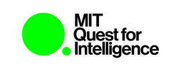
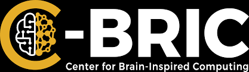

Welcome to the home page of the 2022 Brain-Score Competition!
Brain-Score is hosting a workshop competition at COSYNE 2022! We, along with our gracious sponsors listed below,
are offering CASH PRIZES to the winner of the competition, along with other challenges! The prizes are:
- Best overall Brain-Score (Entire Ventral Stream)
- First Prize: $2,000
- Second Prize: $1,500
- Third Prize: $1,000
- Best V1 Brain-Score: $1,000
- Best Behavioral Brain-Score: $1,000
Below is the current leaderboard. Submissions are open from November 26, 2021 to February 15, 2022. Good Luck!
Competition Leaderboard
{% include "benchmarks/table.html" %}
We would also like to thank our sponsors below!


{% endblock %}